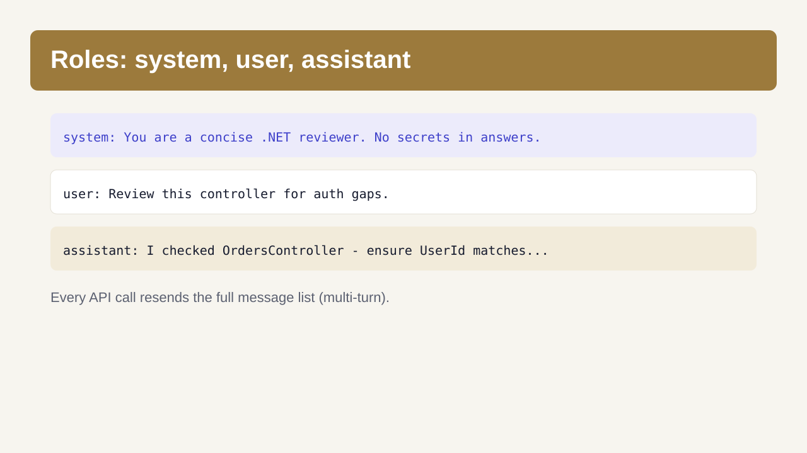

Chat APIs send a list of messages, each with a role. The model uses roles to know what is policy, what is the human, and what it already said. Multi-turn chat is usually the full list resent on every call, not a hidden server memory.
From the deck

The three core roles
| Role | Purpose | Examples |
|---|---|---|
| system | Rules, persona, tools policy, format | “You are a .NET code reviewer. Never output secrets.” |
| user | Human or app input | Question, pasted logs, JSON payload |
| assistant | Prior model replies | Last answer in the thread — keeps continuity |
How this maps to tools you use
Project rules and @ files act like extra system/user context — still bounded by the context window.
Project instructions behave like a persistent system layer for that project’s chats.
ChatRole.System, User, Assistant in Microsoft.Extensions.AI mirror the same idea.
Related: One task, one chat · Controlling the output
Examples
API shape (simplified JSON)
{
"messages": [
{ "role": "system", "content": "You answer in British English. Refuse if asked for credentials." },
{ "role": "user", "content": "Draft release notes for v2.1." },
{ "role": "assistant", "content": "Here is a draft..." },
{ "role": "user", "content": "Make it shorter." }
]
}Turn 2 still sends turn 1
The second user message includes the assistant’s first reply in the list — that is why long chats hit context limits. Starting a new chat drops history but keeps rules (Project / rules files).